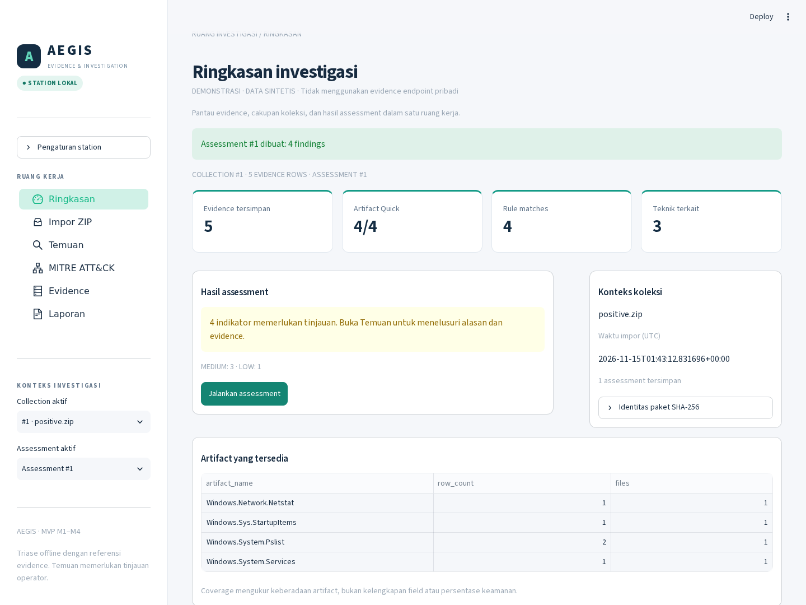

Evidence masuk.
Investigasi
terarah.
AEGIS membantu analis meninjau koleksi Windows, memahami indikator, dan menelusuri bukti sumber dalam satu workflow lokal.
Demo analisis online untuk juri; AEGIS juga dapat dijalankan on-premise.

Tampilan aplikasi aktual · demonstrasi menggunakan data sintetis
Dari endpoint Windows
sampai laporan investigasi.
Dirancang untuk triase awal oleh analis SOC/DFIR dan administrator TI. Temuan menjadi dasar peninjauan dengan sumber bukti yang jelas.
Kumpulkan
Velociraptor offline collector menghasilkan paket ZIP dari Windows.
Validasi
AEGIS memeriksa paket, menormalisasi artifact, dan menyimpan evidence di SQLite.
Tinjau indikator
Rules deterministik menghasilkan matches beserta alasan dan evidence ID.
Telusuri bukti
Periksa data mentah, baris sumber, severity dan teknik MITRE terkait.
Ekspor PDF
Bagikan assessment tersimpan beserta referensi bukti dan batasannya.
Lihat apa yang ditinjau analis.
Lima screenshot dari aplikasi yang berjalan. Klik gambar untuk memperbesar.
Ringkasan investigasi
Lihat jumlah evidence, artifact yang tersedia, rule matches dan teknik terkait. Coverage menjelaskan ketersediaan artifact.
Unduh screenshot ↗
Ikuti workflow
di aplikasi aktual.
Penjelasan karya, hasil pengujian Windows VM dan rekaman alur aplikasi publik. Video ini memakai teks penjelasan tanpa voice-over.
Rekaman memakai data contoh dan satu record lab yang diminimalkan. Durasi 2 menit 19 detik.
Unduh video MP4 ↗Hasil yang bisa direproduksi.
Ingestion, assessment, PDF, UI, kontrak EVTX, migrasi dan penanganan kegagalan.
Fixture positif menghasilkan empat indikator dengan tiga teknik MITRE terkait. Baseline menghasilkan nol matches.
Backend Hayabusa diuji pada 59 event publik. Semua temuan event tunggal dapat ditelusuri ke sumber.
M1–M4 tersedia sebagai MVP dashboard. M5 selesai sebagai proof of concept. Backend M6 tersedia; koleksi EVTX Windows nyata masih perlu divalidasi. Integrasi Hayabusa di dashboard/PDF merupakan pekerjaan M7.
Uji pemutusan internet masih pending. Setup dependency memerlukan internet atau paket yang disiapkan sebelumnya. Angka fixture bukan akurasi terhadap seluruh malware; nol temuan tidak membuktikan endpoint bersih.
Uji evidence lab
di aplikasi publik.
VM Windows diuji menggunakan adaptasi parsial Atomic T1543.003: service uji dibuat dan binary tidak dijalankan. ZIP ini direkonstruksi dari satu record service yang dipilih dari hasil lab; koleksi lain dibuang. Hasil diharapkan: AEGIS-SERVICE-001, 1 temuan, coverage 1/4 artifact.
1. Unduh ZIP lab. 2. Buka aplikasi demo dan pilih Impor ZIP. 3. Jalankan assessment dari Ringkasan. 4. Tinjau Temuan dan Evidence, lalu unduh PDF.
Upload hanya data lab yang boleh dibagikan. Analisis Streamlit ini adalah demo publik; AEGIS juga dapat digunakan secara lokal.